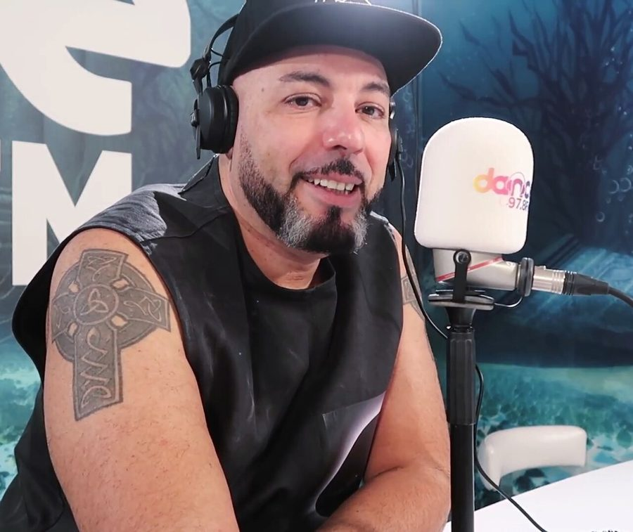

Roger Sanchez joins the New Years celebrations



After many rumours and chatter in the airwaves suggesting it would be the case, the ‘S Man’ has now been added to several dates of what promoters Future Entertainment now describe as the ‘100% national’ Summadayze tour across the country. Roger Sanchez has been confirmed to play at the Adelaide, Perth and Gold Coast legs of the tour, with news pending on what shows he will will be playing in Sydney and Melbourne.
In other Summadayze news, The Presets have also just been revealed as another new addition to the Perth show, with the boys previously announced to play the Summafieldayze show on the Gold Coast. The inaugural Summanights show in Sydney that is set to take over Home Nightclub on New Years Eve also went on sale to the public at 9am this morning.
Roger Sanchez news will play the following dates on the Summadayze tour…
Fri January 1st – Summadayze, Adelaide
Sun January 3rd – Summadayze, Perth
Sat January 9th Summafieldayze, Gold Coast